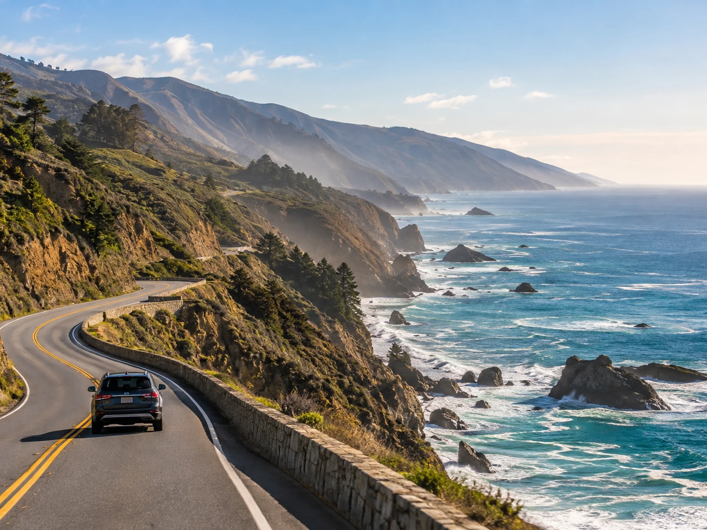
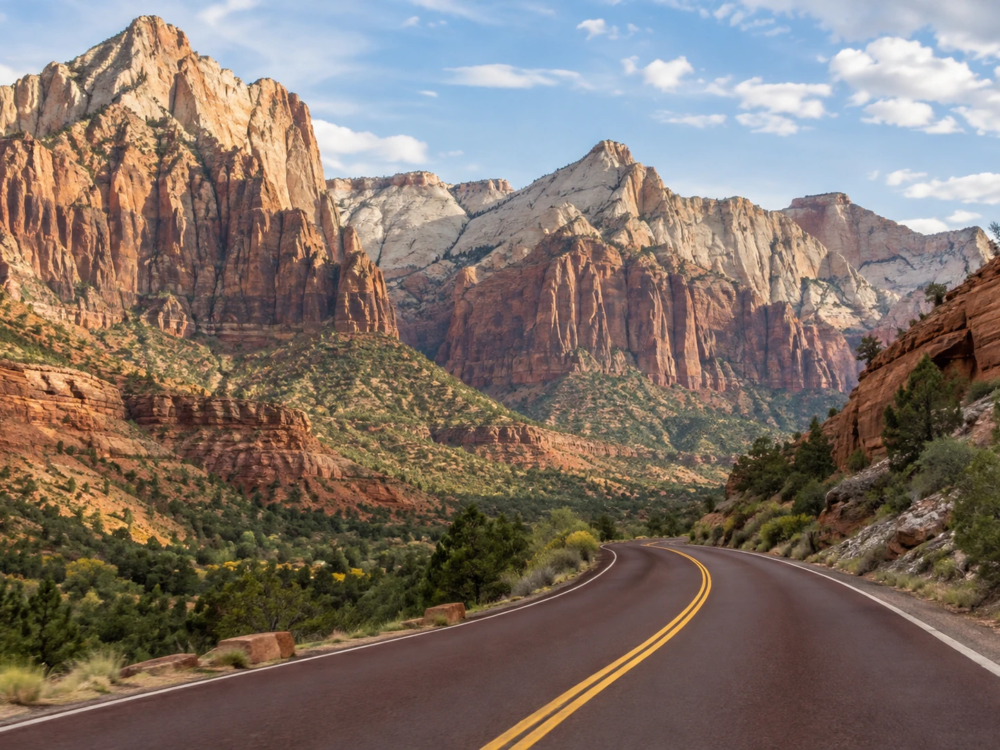

California coast for ocean views and food stops
A California coast trip can combine Los Angeles, Santa Barbara, Big Sur, Monterey, and San Francisco when road conditions allow the full route. The appeal is the variety, beaches, cliffs, wine country side trips, and cities all fit into one trip.
Do not rush it. The coast is better when you can stop for viewpoints, small towns, and meals without worrying about a four hour reservation window.
Utah when you want dramatic scenery
A route through Zion, Bryce Canyon, Capitol Reef, Arches, and Canyonlands gives you a huge amount of visual payoff. The distances are manageable, but sunrise hikes, heat, and park logistics make it worth planning the days carefully.
This is a good trip for people who want nature to be the main event rather than just scenery outside the car.

Pacific Northwest for forests and water
Seattle, the Olympic Peninsula, the Oregon coast, and Portland can create a trip that mixes cities, beaches, rain forests, and food. It feels very different from the Southwest and can be especially beautiful when you like moody coastlines and slower stops.
Build in extra time because ferries, scenic detours, and weather can change the rhythm of the day.
Southwest desert loop for big landscapes
Las Vegas, Zion, Page, the Grand Canyon, and Sedona can work as a loop with very different scenery at each stop. It is a good option when you want a mix of desert, red rock, hiking, and a city night or two.
Summer heat can be intense, so shoulder seasons are often more comfortable for outdoor time.
The route planning rule that saves the trip
Do not count only the driving time on the map. Add time for gas, food, viewpoints, traffic, parking, and the fact that someone will want to stop when the scenery gets good.
Three to five hours of driving can easily become most of the day. Fewer bases and longer stays usually create a better trip than collecting cities just to say you were there.